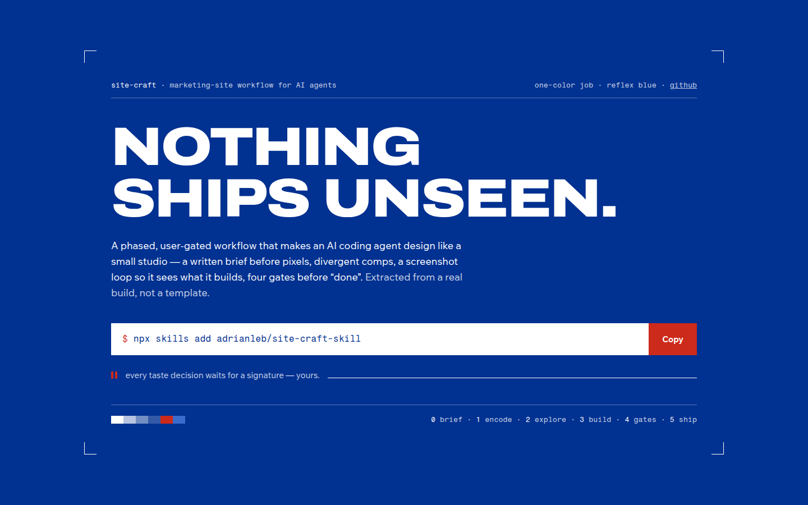
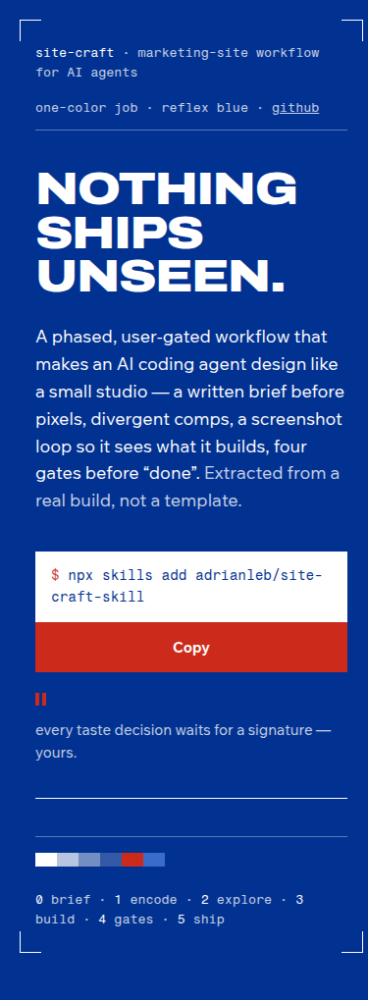
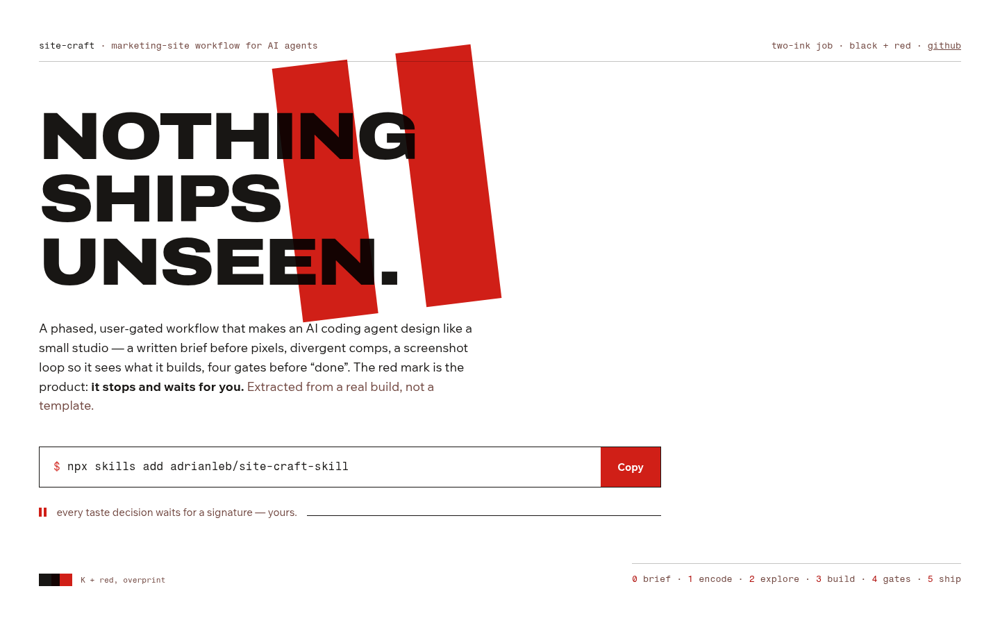
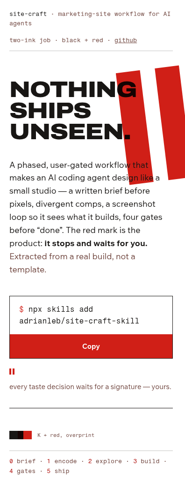
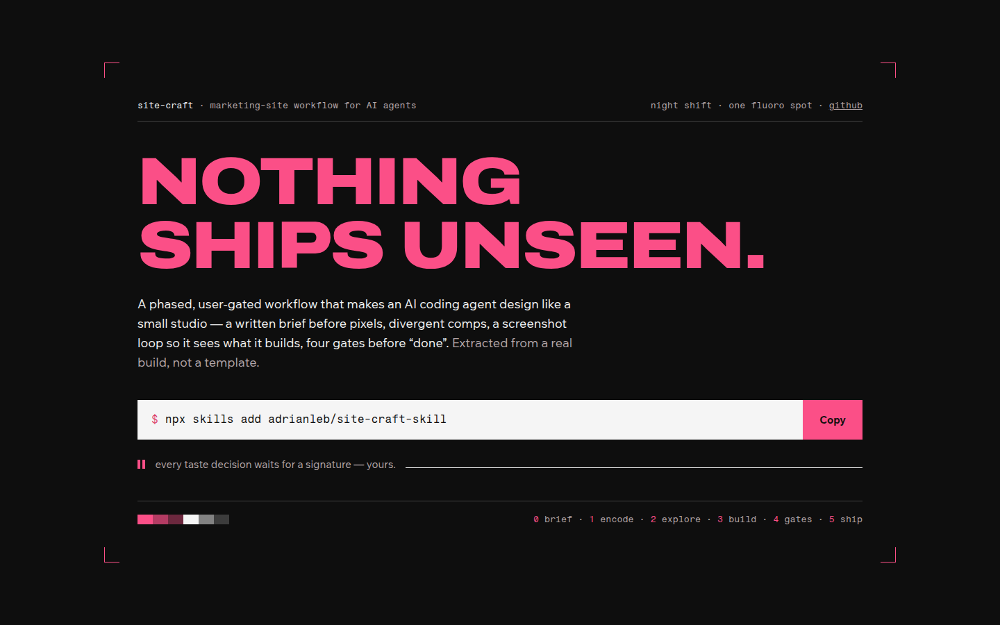
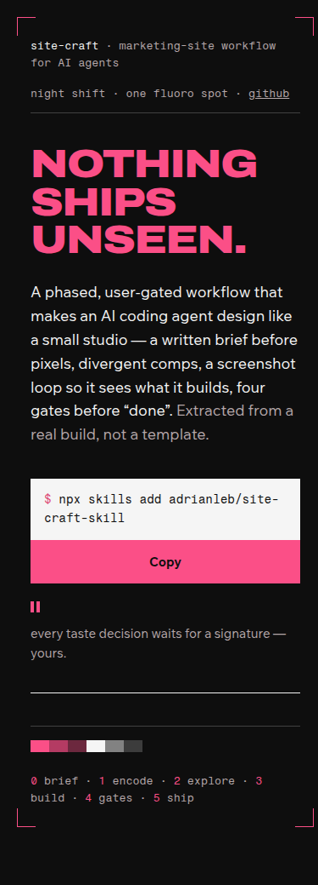
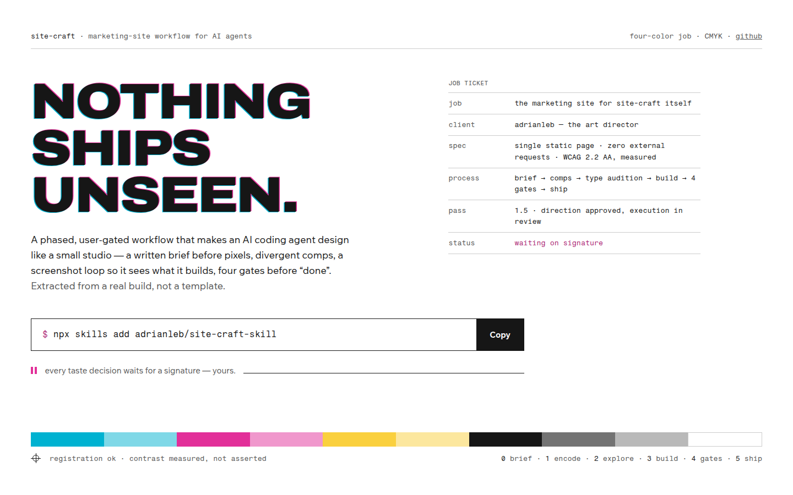
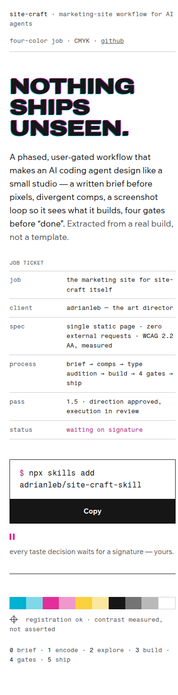

<title>site-craft · round 1.5 — press-check executions</title>
<style>
  :root{
    --paper:#ffffff; --ink:#20241a; --olive:#4b521f; --olive-soft:#5c6430;
    --signal:#b8431c; --muted:#666c4e; --hair:#4b521f2e; --panel:#f6f6f0;
    --mono:ui-monospace,"SF Mono","Cascadia Mono",Menlo,Consolas,monospace;
  }
  @media (prefers-color-scheme: dark){
    :root{ --paper:#181a12; --ink:#e6e7da; --olive:#c0ca70; --olive-soft:#a8b25c;
           --signal:#ff9166; --muted:#a3a98a; --hair:#c0ca7038; --panel:#20231736; }
  }
  :root[data-theme="dark"]{ --paper:#181a12; --ink:#e6e7da; --olive:#c0ca70; --olive-soft:#a8b25c;
           --signal:#ff9166; --muted:#a3a98a; --hair:#c0ca7038; --panel:#20231736; }
  :root[data-theme="light"]{ --paper:#ffffff; --ink:#20241a; --olive:#4b521f; --olive-soft:#5c6430;
           --signal:#b8431c; --muted:#666c4e; --hair:#4b521f2e; --panel:#f6f6f0; }
  html{ background:var(--paper); }
  body{
    margin:0 auto; max-width:66rem; padding:3rem 1.25rem 5rem;
    background:var(--paper); color:var(--ink);
    font:400 1rem/1.6 system-ui,-apple-system,"Segoe UI",sans-serif;
  }
  header.top{ margin-bottom:3rem; }
  .kicker{ font-family:var(--mono); font-size:0.8125rem; color:var(--muted); margin:0 0 0.75rem; }
  h1{ font-size:clamp(1.6rem,4vw,2.3rem); line-height:1.15; margin:0 0 0.75rem; letter-spacing:-0.015em; text-wrap:balance; }
  .intro{ max-width:62ch; color:var(--ink); margin:0; }
  .intro b{ color:var(--olive); }

  nav.toc{ margin:1.5rem 0 0; font-size:0.9375rem; display:flex; flex-wrap:wrap; gap:0.4rem 1.4rem; padding:0; }
  nav.toc a{ color:var(--olive); }

  section.comp{ border-top:1px solid var(--hair); padding-top:2rem; margin-top:3rem; }
  .comphead{ display:flex; justify-content:space-between; align-items:baseline; gap:1rem; flex-wrap:wrap; margin-bottom:0.4rem; }
  .comphead h2{ font-size:1.35rem; margin:0; letter-spacing:-0.01em; }
  .comphead h2 .no{ color:var(--signal); font-family:var(--mono); font-size:1.05rem; margin-right:0.5rem; }
  .face{ font-family:var(--mono); font-size:0.8125rem; color:var(--muted); }
  .thesis{ max-width:70ch; margin:0.25rem 0 1.5rem; font-size:1.0625rem; }
  .thesis b{ color:var(--olive); }

  figure{ margin:0 0 1rem; }
  figure img{ width:100%; height:auto; display:block; border:1px solid var(--hair); }
  figcaption{ font-family:var(--mono); font-size:0.75rem; color:var(--muted); padding-top:0.4rem; }

  .row{ display:grid; grid-template-columns:minmax(0,2.2fr) minmax(0,1fr); gap:1.25rem; align-items:start; }
  @media (max-width:720px){ .row{ grid-template-columns:1fr; } }

  .notes{ display:grid; gap:1rem; }
  .notes h3{ font-size:0.8125rem; font-family:var(--mono); font-weight:400; color:var(--muted); margin:0 0 0.3rem; }
  .notes ul{ margin:0; padding-left:1.1rem; font-size:0.9375rem; }
  .notes li{ margin-bottom:0.35rem; }
  .notes .risk li::marker{ color:var(--signal); }
  .notes .str li::marker{ color:var(--olive); }

  .reco{
    margin-top:3.5rem; border:1px solid var(--olive); padding:1.5rem 1.75rem;
    background:var(--panel);
  }
  .reco h2{ margin:0 0 0.75rem; font-size:1.2rem; }
  .reco h2::before{ content:"→ "; color:var(--signal); }
  .reco p{ max-width:70ch; margin:0 0 0.75rem; }
  .reco p:last-child{ margin:0; }
  .reco .verdictline{ color:var(--muted); font-size:0.9375rem; }
  a{ color:var(--olive); }
</style>
<header class="top">
  <p class="kicker">site-craft · phase 2 · round 1.5 (direction: proof sheet, approved) · 2026-07-13</p>
  <h1>Four executions of the press check</h1>
  <p class="intro">Your round-1 verdict: proof-sheet direction, <b>bolder execution, no green</b>.
  Held constant: composition skeleton, Archivo display, all copy, the functional install row.
  Varied: <b>color world + one demonstrative print-native device each</b>. All screenshot-verified
  at 1440/390, self-critiqued and fixed (V1 lost a murky ghost-impression; V2’s mark now actually
  overprints; V4’s trap went from glitch to fringe).</p>
  <nav class="toc"><a href="#v1">V1 reflex</a><a href="#v2">V2 overprint</a><a href="#v3">V3 night shift</a><a href="#v4">V4 process</a><a href="#reco">recommendation</a></nav>
</header>

<section class="comp" id="v1">
  <div class="comphead">
    <h2><span class="no">V1</span>Reflex — one-color drench</h2>
    <span class="face">device: knockout type · live at /comps/press/v1-reflex.html</span>
  </div>
  <p class="thesis"><b>The page IS the ink.</b> A one-color job in reflex blue; the type is unprinted paper. Drenched strategy — the most committed color move available.</p>
  <div class="row">
    <figure><figcaption>1440 × 900</figcaption></figure>
    <div class="notes">
      <figure><figcaption>390, full page</figcaption></figure>
      <div class="str"><h3>strengths</h3><ul><li>Maximum commitment; nothing timid anywhere on the sheet</li><li>Knockout type reads expensive, print-true</li><li>Red spot makes the CTA the loudest object</li></ul></div>
      <div class="risk"><h3>risks</h3><ul><li>Whole-site sustain: long reading on saturated blue tires — below-fold likely returns to paper, making the transition the hard design problem</li><li>Blue + red needs handling to avoid civic-poster reads</li></ul></div>
    </div>
  </div>
</section>
<section class="comp" id="v2">
  <div class="comphead">
    <h2><span class="no">V2</span>Overprint — K + red</h2>
    <span class="face">device: the pause mark, overprinted · live at /comps/press/v2-overprint.html</span>
  </div>
  <p class="thesis"><b>Two inks, one pass — and the second ink is the product.</b> A giant pause mark (the ⏸ checkpoint made physical) overprints the headline with real multiply behavior. The mark is the brand: it stops, and waits for you.</p>
  <div class="row">
    <figure><figcaption>1440 × 900</figcaption></figure>
    <div class="notes">
      <figure><figcaption>390, full page</figcaption></figure>
      <div class="str"><h3>strengths</h3><ul><li>The signature device carries <em>meaning</em> only this product can claim — the user gate</li><li>Craft-literate: multiply is how ink actually behaves</li><li>White paper below the fold keeps long-form reading easy</li><li>Systematizes: the mark becomes favicon, 404, section stamps, og-image</li></ul></div>
      <div class="risk"><h3>risks</h3><ul><li>Red-black poster energy can drift agitprop if below-fold stays loud</li><li>The mark is a layout actor — every breakpoint needs its position art-directed (mobile currently grazes the paragraph; tunable)</li></ul></div>
    </div>
  </div>
</section>
<section class="comp" id="v3">
  <div class="comphead">
    <h2><span class="no">V3</span>Night shift — fluoro on black</h2>
    <span class="face">device: the one lit sheet of paper · live at /comps/press/v3-nightshift.html</span>
  </div>
  <p class="thesis"><b>The press room at night.</b> Black surface, one fluorescent spot ink, and the command strip as the single lit sheet of paper on the table.</p>
  <div class="row">
    <figure><figcaption>1440 × 900</figcaption></figure>
    <div class="notes">
      <figure><figcaption>390, full page</figcaption></figure>
      <div class="str"><h3>strengths</h3><ul><li>Strongest immediate jolt of the four</li><li>The paper-strip CTA is a genuinely lovely object</li><li>Flat fluoro-on-black (no glow) is rare in this category</li></ul></div>
      <div class="risk"><h3>risks</h3><ul><li>Closest to "dark dev tool" category memory, press framing notwithstanding</li><li>Long-form on black demands strict type discipline</li><li>Fluoro pink polarizes — partly the point, still a bet</li></ul></div>
    </div>
  </div>
</section>
<section class="comp" id="v4">
  <div class="comphead">
    <h2><span class="no">V4</span>Process — CMYK structure</h2>
    <span class="face">device: color bar as hero, chromatic trap, job ticket · live at /comps/press/v4-process.html</span>
  </div>
  <p class="thesis"><b>The four-color job made structural.</b> K carries every word; C/M/Y exist only as working marks — a full-width color bar, a hairline chromatic trap on the headline, and a real job ticket with this project’s actual spec.</p>
  <div class="row">
    <figure><figcaption>1440 × 900</figcaption></figure>
    <div class="notes">
      <figure><figcaption>390, full page</figcaption></figure>
      <div class="str"><h3>strengths</h3><ul><li>Richest information design; the job ticket is honest product truth</li><li>Most professional-print vocabulary of the four</li><li>System extends naturally — phases could own process tints</li><li>White paper: easiest long-form reading</li></ul></div>
      <div class="risk"><h3>risks</h3><ul><li>Most complex system to keep disciplined over a full page</li><li>Printshop-template cliché looms if the wit drops</li><li>C/M/Y must stay marks, never text, or contrast dies</li></ul></div>
    </div>
  </div>
</section>

<section class="reco" id="reco">
  <h2>Recommendation: V2 Overprint</h2>
  <p><b>V2 is the one where the boldness buys meaning.</b> V1 and V3 spend their courage on the
  surface (memorable, but the drench is the whole trick); V4 spends it on system (rich, but the
  vocabulary belongs to printshops more than to this product). V2 spends it on a <em>device you
  can own</em>: the pause mark is the ⏸ checkpoint — the actual soul of the skill — and it
  scales down to a favicon and up to a 404 without losing identity. Paper stays white, so the
  full page reads comfortably below the fold while the hero stays loud.</p>
  <p>Worth grafting regardless of pick: V4’s job ticket (as a colophon or “the spec” section) and
  V1’s knockout treatment for one drenched below-fold band (e.g. the phases section).</p>
  <p class="verdictline">Your call: pick V1–V4 (grafts welcome), or send this round back too.
  Next: the ~6-voice type audition runs on the winner’s skeleton.
  Live comps: http://100.67.202.87:4173/comps/press/</p>
</section>